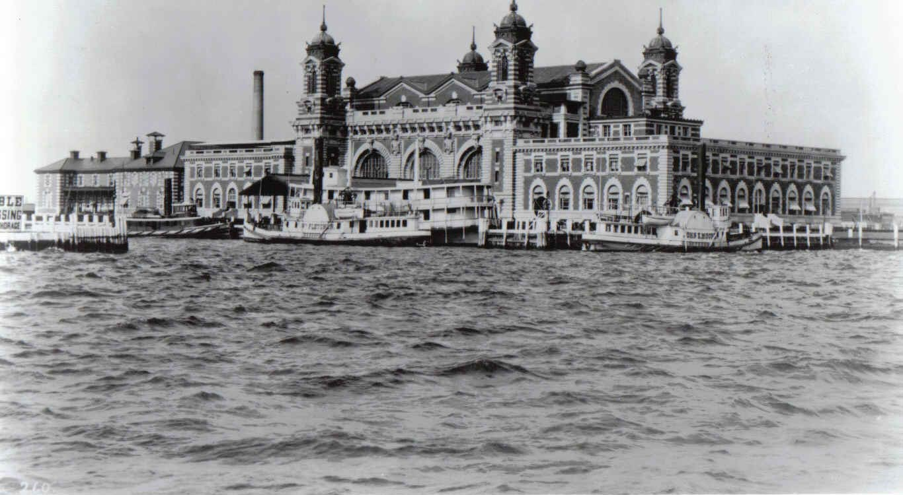

Exhibitions
Exhibition 1: Streets of Arrival: Immigration and the Making of New York
Step into the lives of newcomers who transformed New York City into a global crossroads. Through personal artifacts, recreated tenement rooms, and interactive maps tracing journeys from Ellis Island, this exhibition explores how waves of immigrants reshaped neighborhoods, culture, and identity. Visitors can listen to oral histories, examine evolving city demographics, and reflect on the ongoing story of migration in the city.